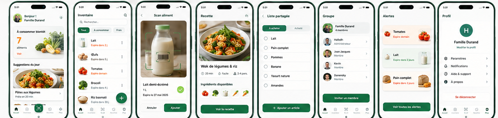
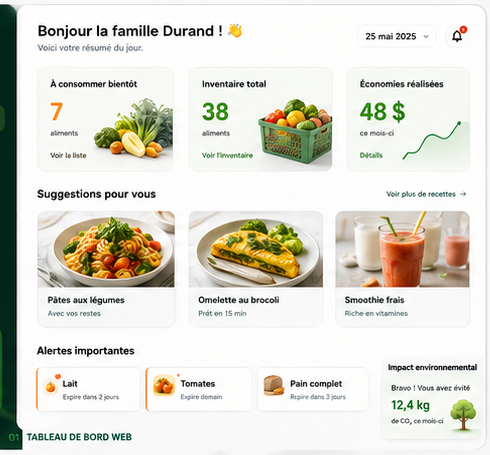
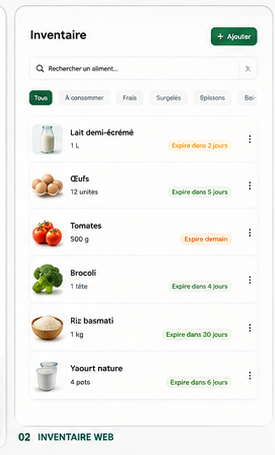
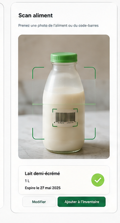
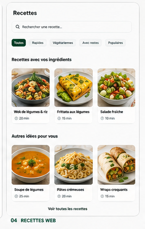

Les écrans essentiels de MealSaver, sur ordinateur comme sur mobile.
Les maquettes présentent les principales fonctions du MVP :
tableau de bord, inventaire alimentaire, scan intelligent,
recettes et vues adaptées aux petits écrans.

↔ Faites défiler pour voir les écrans mobiles en plus grand.
Vue d’ensemble
Une interface cohérente pour suivre les aliments et agir rapidement.
Les différents écrans utilisent la même logique : voir ce qui est disponible,
repérer les priorités, choisir une recette et compléter la liste d’épicerie
lorsque quelque chose manque.

Tableau de bord
Voir rapidement ce qui demande votre attention.
Le tableau de bord rassemble les informations utiles du foyer :
aliments à surveiller, alertes importantes et accès rapide
aux principales fonctions.

Inventaire alimentaire
Savoir ce que le foyer possède déjà.
L’écran d’inventaire permet de consulter les aliments disponibles,
leur quantité, leur lieu de conservation et leur date d’expiration.

Scan intelligent MVP
Ajouter un aliment avec une validation simple.
Le scan propose un résultat à partir d’une photo. L’utilisateur
confirme ou corrige les informations avant l’ajout à l’inventaire.
La saisie manuelle reste disponible.

Recettes anti-gaspillage
Cuisiner avec les aliments déjà disponibles.
Les recettes mettent en valeur les aliments du foyer et ceux
à consommer bientôt. Les ingrédients manquants peuvent être
ajoutés à la liste d’épicerie.
Autres vues du parcours
Les écrans travaillent ensemble autour du même foyer.
Le MVP prévoit aussi les vues nécessaires pour coordonner les achats,
les membres du foyer et les aliments à consommer en priorité.
🛒
Liste d’épicerie
Une liste partagée permet aux membres du foyer de voir ce qui manque
et de limiter les achats en double.
👥
Foyer
Les membres utilisent la même information pour mieux coordonner
l’inventaire et les achats.
🔔
Alertes
Les aliments proches de leur date d’expiration sont mis en évidence
pour être consommés en priorité.
Web responsive
La même expérience s’adapte à l’ordinateur, à la tablette et au téléphone.
Le MVP est conçu comme une application Web responsive. Les écrans s’adaptent
à la taille de l’appareil afin de rester lisibles et utilisables sans
dépendre d’une application mobile native.